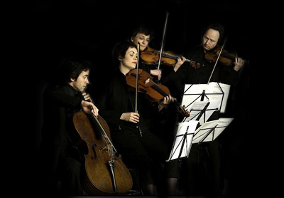

Arcanto Quartett (De Bijloke, 16.05.2008)
maandag 19 mei 2008

In een overvol Kraakhuis van De Bijloke bracht het Arcanto Quartett op vrijdag 16 mei drie werken voor strijkers: 6 Moments Musicaux van Kurtág, een laat strijkkwartet opus 64 no.2 van Haydn en het vijftiende strijkkwartet van Shostakovich (ik weiger zijn naam met een ‘j’ te schrijven).
Het piepjonge (anno 2007) vierde strijkkwartet van György Kurtág (°1926) spitste meteen de oren van het publiek. De zes miniatuurtjes — naar analogie met Schubert — staan vrij los van elkaar maar delen dezelfde variatie in dynamiek en kleur. Ze voelen daardoor zeer licht, levendig en sprankelend aan. Samen vormen ze een sterk pleidooi voor de opwaardering van deze componist in de schaduw. Critici spreken trouwens nu al van een instant-klassieker. Ik was in ieder geval geïntrigeerd en had achteraf onmiddellijk zin om het werk een tweede keer te beluisteren. Helaas bestaat er nog geen uitvoering op cd.
Papa Haydn (°1732-1809) kreeg een plek toegewezen tussen de twee andere, ultramoderne werken. Zonder schroom overigens: Haydn is de absolute vader van het genre. Zonder hem geen Beethoven, geen Bartók of andere snotneuzen. Natuurlijk dient de luisteraar zijn oorschelp te plooien naar de tand des tijds. Maar wie vreesde voor ‘muziek voor bij de boterhammen‘, zoals een ex-directeur van Radio3 ooit zei, zat er naast. Hoe strenger de vorm, hoe groter de kunst. Hadyn bewijst met dit kwartet dat klassiek — in de eerste betekenis van het woord — niet saai hoeft te zijn.
De pauze was broodnodig om het gehoorde te laten bezinken, maar vooral om de geest te effenen voor wat komen zou. Je voelde wel dat iedereen een beetje gespannen liep. Ik had overigens de gelegenheid om Dirk Vermassen, mijn oud-leraar en duidelijk aanwijsbare oorzaak van mijn liefde voor de klassieke muziek, nog eens te begroeten. Which was nice.
Enkele kaarsen werden ontstoken op het kleine podium “op verzoek van de spelers”. De mensen zaten, de zon zonk, de spelers kwamen en ademden, ogen toe. En toen begon het.
Het langgerekte elegy van het 15e en laatste (anno 1974) strijkkwartet van Dimitri Shostakovich zette meteen de toon voor de rest van de avond. Deze 12 minuten durende, ingetogen klaagzang van een man zonder hoop, nu eens geïsoleerd, dan weer in fuga, bracht de zaal tot absolute stilte (met uitzondering van die verrekte neusfluiter naast mij, sterf!). De viool houdt aan en drijft de spanning op tijdens het zacht uitvloeiende rustpunt op het einde.
Enkele tientallen ronduit ijzingwekkende noten, nu eens viool, dan altviool, verscheuren de doodsrust. De toon is agressief, fel en bevreemdend en stort de luisteraar in het ongewisse. Een cynische serenade, een donkere dans vangt aan en drijft de spot, met de dood, met de componist. Of is het weemoed? Maar het dansende ritme wordt alweer aan flarden gescheurd met hetzelfde gevoelloze geweld als waarmee het werd aangekondigd.
Het intermezzo begint met een fel protest van de viool tegen de dreigende achtergrond van de cello en besluit met zes zéér uitgesproken noten die nu regelmatig terugkeren: een soort dies irae motief als het ware. De cello neemt de overhand. Rust keert terug.
De nocturne bouwt hierop voort en brengt opnieuw warmte in de muziek. Er is weer plaats voor het menselijke, berusting, nostalgie, herinneringen en zelfs enkele sprankeltjes moed. Maar erg lang duurt het niet… Een pizzicato-motiefje klinkt als “uw tijd is om” en herinnert aan wat hier gaande is: de dood.
De funeral march heft plechtig aan, alsof het een staatsbegrafenis betreft van een groot man. De cello brengt een uitgebreide hommage, de viool neemt over. Allen stemmen in. Het jammeren deint langzaam uit. De dynamiek van de muziek gaat naar beneden, de stiltes nemen de overhand. Tot opeens!
Wat is dit? Uit de droefnis stijgt een fel klinkende leeuwerik! De viool rilt van spanning. De cello gaat er achterna. Maar beiden storten al even snel weer neer. Enkele pizzicato-tonen veranderen de kleur en de stemming. Er is opnieuw berusting. Dan weer een opflakkering, stiller nu, korter. Weer pizzicato… Langzaam, heel langzaam, sterven de trillers uit in het absolute niets. Een briljant stukje, deze epiloog.
Was het de uitvoering? Ik ontdekte nochtans enkele schoonheidsfoutjes: wat snaren die werden overgeslagen, stemming die niet 100% gelijk zat. Of was het de sfeer: de aangename zomeravond, het gezelschap, de kaarsen, anything? Ik weet het niet.
Nog nooit was ik op deze manier geraakt door een life uitvoering van een strijkkwartet. Ik was was er compleet ondersteboven van. Elke noot, elke seconde had ik op het puntje van mijn stoel gezeten. Alles geabsorbeerd, mij volledig ingeleefd. Ik was echt van mijn melk.
Een beetje verdwaasd sputterde ik nog enkele weinig zeggende woorden tegen mijn oud-leraar en verdween toen met Pieter — voor wie dit overigens zijn kwartetinwijding was — in het Gentse nachtleven. Mijn arme hersenen, nog ten volle ontvankelijk voor de fijnste prikkels, werden genadeloos verdronken in liters bier. Dat ik heb ik mij de volgende ochtend om half zeven in de beenhouwerij beklaagd. Maar mét de glimlach van iemand die net iets bijzonders heeft meegemaakt.